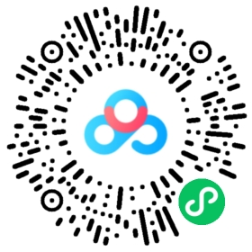

0x00 本节大纲
本节课主要回顾前面课程学过的所有知识点、查漏补缺，然后就正式期末考试了。
毕业后即使没有老师带了，也可以多根据这个思路去复习巩固
0x10 作业汇总
目前一共有 9 个作业：
- 02-气息控制： 长音 a
- 03-声带控制： 轻微闭合、自然闭合、用力闭合的 a 音
- 05-真假声与头声： 真假声切换
- 06-声音通道控制： 鼻子哼鸣滑音、嘴巴打嘟-半打嘟-Wow音
- 08-元音和咬字： 咬筷子说话 30 秒
- 10-气声、气泡音与颤音： 双颤音（唇颤音）
- 17-弱混和边缘化： 弱混
- 20-咽音： 咽音
- 26-K 歌技巧： 干净的滑音
在期末考之前，需要提交上述左右作业 “检查通过” 的截图到群里。
0x20 重点回顾
02节-气息控制
练习气息的时候，需要：
- 观察自己的呼吸
- 适应自己的呼吸
- 自然的呼吸、摆好身体姿势，以打下气息支撑的基础
如果不能够平稳自然的把空气放出来，声音一点是不稳的（挤或抖）。
所以如果有空气不稳的，可以回看《02-气息控制》的录播。
脑子里一定要有一个概念： 声音一定是要有空气输送才会振动发声，如果没有空气启动，一定是没有声音的。
如果给空气没有做好，下一步关于声带的讨论是没有意义的。
好的站姿/坐姿对输送空气至关重要，如果没有良好体态，呼气会很费劲。
即使想弯腰，也是确保三点一线去弯腰。
03节-声带控制
了解声带结构是必须的： 清楚的辨识到自己到底在用什么声带发声。
- 平常说话会带到一点假声带（尽量改成环甲说话）
- 极端嗓会用到假声带： 怒音、撕裂音、烟嗓
- 其他发声技巧都不会用到假声带
如何尽量不让自己的假声带参与到发声： 先辨识、再加强锻炼真声带发声肌肉（环甲、甲杓）的能力（拉伸、厚薄）。
闭合、不闭合、不完全闭合 三个状态学好了，真声假声会很容易。
假声是虚的： 一定是不完全闭合状态
闭合住的假声是头声
气泡音是一个非常轻松的声音，它不需要刻意闭合。
气泡音一定不能挤（闭合过度），否则在之后的发声会带到很多假声带。
任何的发声训练都是一个行为的训练，辨识的是肌肉、而不是音色
如果听到自己有挤嗓、扯嗓的情况，先调整肌肉再练，不要挑战自己现阶段很难唱上去的歌曲。
05节-真假声与头声
重点在于发出假声和头声，两种声音都是放松的声音，不需要用很大的感觉去唱出来。
“找破音点” 和 “学米老鼠” 说话都是一个过程，熟练后慢慢会用真声喊上去、这时候声带就会被动放松，被动放松的结果就是假声。
这个过程重复练习多遍，形成肌肉记忆，就能去控制和使用它。
| 声音类型 | 以气带声 | 正确的声带闭合 | 正确的声带拉长 |
|---|---|---|---|
| 真声 | √ | √ | |
| 假声 | √ | √ | |
| 头声 | √ | √ | √ |
哪个声音要做到什么，打勾的记到脑子了。
不能用真声唱歌，因为甲杓肌参与太多，甲杓肌是增加声带面积的、又没有声带拉长，就改变不了音高，只能在低音区。
找到假声、和假声的练习，最终是为了头声打基础的：
- 假声有环甲拉长，同时它的甲杓参与是很少的，然后加上闭合，它就变头声了。
- 最后在头声基础上、加上甲杓，就变成混声了
- 混声 = 正确的声带拉长（环甲） + 真声的质感（甲杓） + 正确的闭合
唱歌要用环甲主导的混声
- 闭合
≠有力度 - 闭合
≠有力度 - 闭合
≠有力度
闭合 和 力度 是为了行为所创造的词语（不是音色）。
闭合是通过空气流速改变的（伯努利原理）。
如果现在还有挤嗓等问题，想想自己是不是辨识和锻炼肌肉做错了
06节-声音通道控制
- 环甲肌： 通过前后拉长、改变音高
- 甲杓肌： 真声质感
每次去做环甲/甲杓训练的时候，不要想着去找发声的位置，先辨识肌肉！ （发声位置是后期做的事情）。
这个肌肉在你的喉咙里面、甚至都没有发力感，又何谈用它发声呢 ？！
你只有先辨识到它，再锻炼到它能够把肌肉去绷紧发力，再谈发声位置。
环甲肌一开始练习一定要靠动作辨识，而不是音色。
假声带当你辨识到它之后，就尽量不要用它，先把别的肌肉锻炼好。
不要让假声带变成习惯。
07节-共鸣腔体
口腔、鼻腔 的比例通过抬软腭调整。
音色时通过改变腔体的相对大小而改变。
当改变音高的时候，发现音色改变了，其实保持好口腔大小不变就可以了 —— 软腭不要动它，音色自然就不会改变。
喉位不要管它，喉位是结果，不要控制它
08节-元音和咬字

每个音怎么咬的，需要长期训练。
咬字很重要，咬字健康纠正过来后，它可以影响：
- 对唱歌非常有帮助
- 对口腔控制有帮助，例如 ang 后鼻音咬好了，就会自然抬软腭放大口腔空间
- 对音色控制有帮助
- 对平常说话好不好听也有帮助
咬字不清是很多人的通病，要做到在松弛的情况下，每个音都让人听得清楚舒服。
流行的咬字不需要做到太字正腔圆，字正腔圆是因为肌肉紧张了（平常说话也不会一本正经地字正腔圆）。
一些咬字技巧：
- 浊化辅音可以让发声更舒服（肌肉发力的容错率变高）
- 如果下巴很硬，就每天用大拇指扣住下巴练 2 小时，练 1 个月下巴就放松了、就可以在这种状态清晰说话。
- 下巴很硬的另一种方式解决技巧是，用两只手指卡在喉咙两侧（甲状软骨和舌骨两边的缝隙），不需要用力，手指卡在那里不让他咬合。（两年前淘汰的方法，会不舒服）
10节-气声、气泡音与颤音
重点是 气泡音 和 气声，如果都有问题，先解决 气泡音 。
- 气泡音： 洁净的声音
- 气声： 主动漏气的声音（可控的不完全闭合）
11节-歌曲情感要素
如果唱歌想要形成自己的风格，就要记住主歌、副歌、桥段的情感推进公式，自己多打磨，不是别人怎么唱自己就怎么唱，唱起来会很累。
少说悄悄话，它是假声带闭合
12节-哭腔与怒音
哭腔比较重要，它可以让你在短时间内提高一个音域，对唱歌很有用的一个技巧。
哭腔可以多去用, 而且要用声带本身的哭腔：
- 大哭腔：大气流冲击、抬软腭
- 小哭腔：小气流冲击、不抬软腭
怒音不做要求，找得时候稍微收敛一点，避免伤到声带
16节-混声体系


下学期的大课之一，建议多回看《16-混声体系和换声概念》的录播，对以后想学 EVT 体系或者肌肉体系的课程会有帮助。
重点关注的是怎么发一个比较好的混声：从低音到高音不要突然加力、保持音色不突变。
声带长短厚薄了解即可；没有换声点的概念。
17节-弱混和边缘化

下学期的大课之一，建议多回看《17-弱混和边缘化》的录播。
重点关注边缘化是什么状态：边缘化是空气接触到声带的时候、只有边缘振动，它代表声带和空气的接触面积变小变薄、声音会更轻松。
声带面积小是环甲拉伸导致的，声带面积大是甲杓发力导致的。

弱混是初学者接触到混声体系中，唯一可以发出的一种混声。
至少要做到：在假声不拉紧的状态下，把甲杓加进去，然后在上下变换音高的时候不会有任何问题。
弱混如果破音：破音是控制太紧后才会崩掉，其实只要不控制它就不会破音，因为高音本身就不需要你用力拉紧它，本身就是放松的声音。
如果弱混没做到，说明前面的环甲、甲杓、假声、头声等基础都没有学好吃透。此时平衡混、强混也是不可能做到的。
18节-R&B与转音
关注一下 R&B 是反拍（二四拍），怎么去转音就要多练：找音、分段。
但其实很多歌手的转音都是即兴的，找他们的转音会很累，没有必要。
最好是找到 R&B 的律动后再 freestyle 即兴转音。
R&B 就是自由，转音怎么排列其实无所谓。
20节-咽音
更多的是注意 AES 收缩变窄的状态，也就是咽音。
咽音能够刺激环甲肌的收缩，它可以很好锻炼环甲肌的发力。

这节课延伸了很多咽音练习的方法.，建议多回看《20-咽音》的录播（下学期的大课之一）。
这些练习不要带入到声音里面，它是为了锻炼环甲肌发力的。
21节-戏腔
主要练习戏腔的发声和咬字。
戏腔的发声其实是可以作为 “AES 收缩刺激环甲” 的延伸练习。
不仅仅假声可以加咽音，真声也可以加咽音
22节-强混（Belting）

下学期的大课之一，建议多回看《22-强混（Belting）》的录播。
这节课能够明显测试到自己的不足在哪里，哪边不好就针对性做专项练习，比如说：环甲肌拉伸不好，那就是甲杓加太多、导致其他肌肉比较少，那么就要去练其他肌肉的发力。
强混是没有按照 PPT 讲的，我根据录播画了一个示意图，结合录播多看并理解它。
24节-摇滚与撕裂音
没有什么重要的，这节是风格课。
25节-民谣与烟嗓
这节也是风格课，主要了解音乐史，民谣本身没有什么技巧。
烟嗓就用很大的气流去推的悄悄话。
烟嗓本身也没什么好讲的，它其实就是我们学音乐前，常见的发声坏习惯（扯嗓）的延伸，几乎所有人都能做到。
26节-每日自主练习与 K 歌技巧
这节课也很重要，在毕业后，平常应该怎么练习、练习的方向是什么，照着做就可以了。
还有一些唱歌、录歌前怎么开嗓、怎么保护嗓音的技巧。
唱歌、录歌一定要开嗓，晚上无所谓（因为白天说话开过嗓了），早上录歌一定要开嗓
建议多回看《26-每日自主练习与 K 歌技巧》的录播。
0x30 总结
其实想要发声没有问题，吃透以下课程即可：
导致发声不好的几个基本原因：
- 没有去辨识肌肉
- 没有花时间长期练习
- 没有专业的导师帮你听发声是不是正确
0xF0 相关资料（非公开）
禁止传播，资料仅限个人使用
0xF1 0411届
0xF2 0405届（往届）
0xF3 下载
- 下载地址： https://pan.baidu.com/s/1ArWAsdefAi4ETWxvQ41-MQ?pwd=j7cv
- 解压密码： 公众号获取
